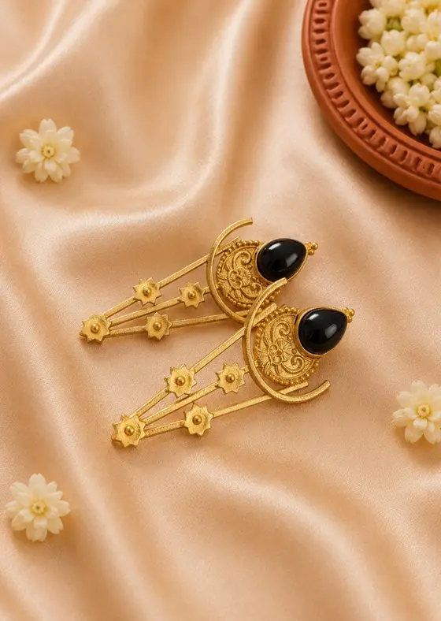
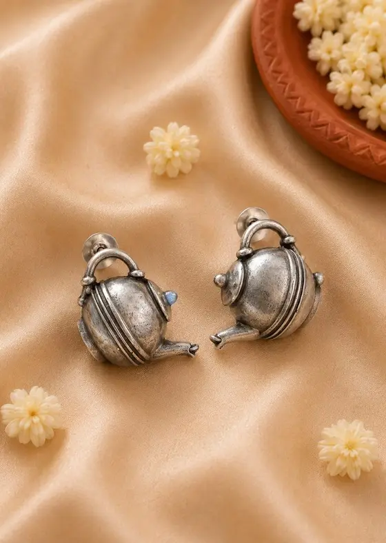
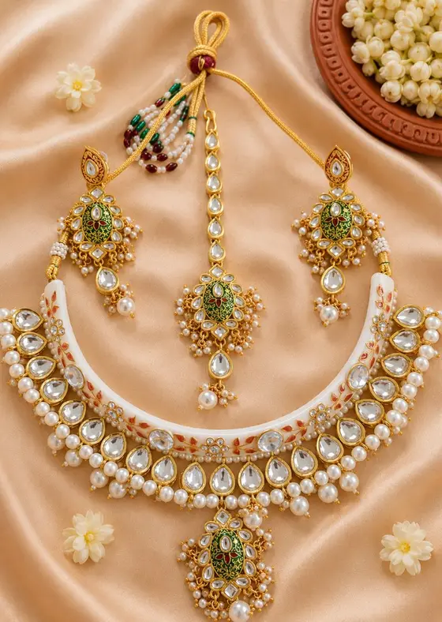

Wash & Care
Our textiles are hand block printed in Rajasthan with natural vegetable dyes, and our jewellery is handcrafted. A little gentle care keeps their colours rich and textures soft for years.
Hand block printed cotton bedsheets & table runners
Natural vegetable dyes are sensitive to strong chemicals and heavy scrubbing. Gentle cleaning preserves the beauty of the hand block prints.
First wash
Wash separately in cold water with a pinch of sea salt to help set the natural colours.
Hand wash or gentle machine wash
Wash by hand, or use a gentle or delicate machine cycle with cold water.
Mild detergent only
Use a mild, pH-neutral liquid detergent without bleach, optical brighteners or harsh enzymes. Avoid detergent powders that contain bleach.
Do not soak
Wash quickly. Do not leave the fabric in soapy water for a long time.
Squeeze, do not wring
Gently squeeze out excess water. Do not wring or twist hard.
Dry in shade, inside out
Line dry in a shady spot, inside out. Direct sunlight fades natural dyes faster, so avoid the harsh afternoon sun on the terrace.
Iron on the reverse
Use a warm to medium iron on the reverse side while the fabric is slightly damp, for a crisp, smooth finish.
Mulmul (mul) cotton sarees
Mulmul is an exceptionally soft, breathable cotton. It needs delicate handling to stay soft and keep its print vibrant.
First wash: dry clean
We recommend dry cleaning for the first wash. After that, hand wash separately in cold water.
Swish, never scrub
Gently swish in cold water with a mild liquid soap made for fine cottons, or baby shampoo. Never scrub or rub the fabric hard.
Soak for 5 minutes at most
Avoid soaking for longer than 5 minutes.
Air dry in shade
Dry in the shade only, away from direct sunlight.
Steam iron on the reverse
Iron on medium to high heat with steam, on the reverse side.
Vegan silk sarees
Vegan silk gives a luxurious, silky drape with no animal products. Gentle handling prevents stress on the fabric and keeps its lustre.
Dry clean for best results
Dry cleaning is recommended. You can also hand wash gently and separately in cold or lukewarm water.
Silk-safe detergent
Use a mild, silk-safe liquid detergent or baby shampoo.
Dip and swish
Dip and gently swish the saree in soapy water. Do not scrub, brush or rub it.
Rinse well
Rinse thoroughly in cold water to remove all detergent.
Towel, then dry flat in shade
Do not wring or twist. Roll it in a clean towel to absorb excess water, then dry flat in the shade.
Low heat, with a press cloth
Iron on the silk or low heat setting on the reverse side. If you iron the front, place a thin cotton cloth between the iron and the saree.
Jewellery care
Our earrings, danglers and necklace sets are made in brass, silver-tone and gunmetal finishes, often set with kundan, stones or pearls. Metal reacts with moisture, sweat and chemicals, so the golden rule is simple: last on, first off. Put jewellery on after perfume, hair oil and make-up, and take it off before bathing, cooking or exercise.

Brass jewellery
- Brass naturally darkens with time. This is normal and can be cleaned.
- Wipe with a soft dry cloth after each wear to remove sweat and oils.
- For light dirt, wipe with a cloth dipped in mild soapy water, then dry at once.
- For tarnish on plain brass, gently rub with a little lemon juice and salt, rinse and dry completely. Do not use this on pieces with stones, kundan, pearls, enamel or a plated finish.
- A slight green mark on the skin can happen with brass in humid weather. It is harmless and washes off. Keeping the piece dry helps prevent it.

Silver & gunmetal (oxidised) finish
- The dark, antique look on oxidised and gunmetal pieces is part of the design.
- Do not use silver polish, silver dip or lemon. They strip the oxidised finish.
- Clean only when needed, by wiping gently with a soft dry cloth.
- Keep away from water, perfume, sanitiser and deodorant.
- Store in an airtight zip pouch to slow tarnishing, especially in the monsoon.

Kundan, stone & pearl sets
- Never wash or soak. Water loosens settings and dulls pearls.
- Wipe gently with a soft dry cloth or cotton bud after wearing.
- Keep perfume, hairspray and hair oil away from stones and pearls.
- Store flat, each piece wrapped in soft cloth or tissue, so stones do not scratch each other.
- A small sachet of silica gel in the box keeps moisture away.
Quick tips
Colour bleed is normal
A little colour may run in the first one or two washes. This is typical of natural vegetable dyes and does not affect the vibrancy of the print.
Let natural fibres breathe
Store cotton and vegan silk sarees wrapped in soft cotton cloth or a cloth bag, in a cool, dry place. Avoid plastic covers.
Refold and air your sarees
Refold sarees along different lines every few months, and air them out after the monsoon, so the folds do not weaken.
Jewellery: separate and dry
Keep each jewellery piece in its own pouch or box compartment, with silica gel, away from the bathroom and kitchen.